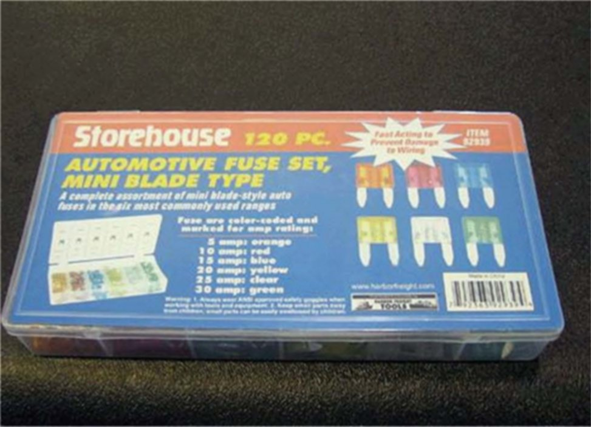

Electrical - Aftermarket Fuse Warning
Bulletin No.: 07-08-45-002Date: September 05, 2007
ADVANCED SERVICE INFORMATION
Subject:
Service Alert: Concerns With Aftermarket Fuses in GM Vehicles
Models:
2008 and Prior GM Passenger Cars and Light Duty Trucks (including Saturn)
2008 and Prior HUMMER H2, H3
2008 and Prior Saab 9-7X
Concerns with Harbor Freight Tools "Storehouse" Branded Blade Type Fuses
General Motors has become aware of a fuse recall by Harbor Freight Tools/Storehouse for a variety of aftermarket fuses. In two cases, these fuses have not provided protection for the wiring system of the vehicles they were customer installed in.
Upon testing the 15 amp version, it was found that the fuse still would not "open" when shorted directly across the battery terminals.
How to Identify These Fuses

Packed in a 120 piece set, the fuse has a translucent, hard plastic, blue body with the amperage stamped into the top. There are no white painted numbers on the fuse to indicate amperage. There are no identifying marks on the fuse to tell who is making it. The fuses are known to be distributed by Harbor Freight Tools but there may be other marketers, and packaging of this style of fuse. It would be prudent to replace these fuses if found in a customers vehicle. Likewise, if wiring overheating is found you should check the fuse panel for the presence of this style of fuse.
All GM dealers should use genuine GM fuses on the vehicles they service. You should also encourage the use of GM fuses to your customers to assure they are getting the required electrical system protection. GM has no knowledge of any concerns with other aftermarket fuses. If additional information becomes available, this bulletin will be updated.

Disclaimer